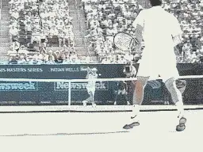
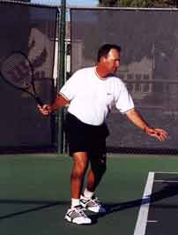
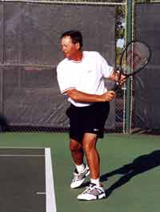
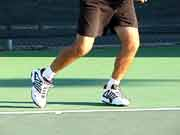
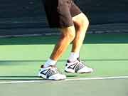
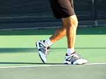
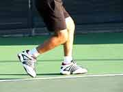
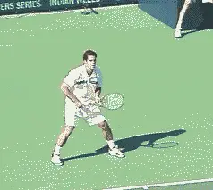
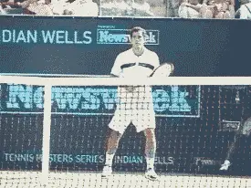

← Bài trước: Footwork: Ready Position | 🏠 Footwork Trang chủ | Bài tiếp: → The Athletic Foundation
Hai bước đầu tiên: Chìa khóa cho sự nhanh nhẹn
Thư viện kiến thức quần vợt thống nhất — Cơ bản, Phân tích kỹ thuật, Thư viện tham khảo và nhiều hơn nữa
Hai bước đầu tiên: Chìa khóa cho sự nhanh nhẹn
Michael Friedman

Học cách phủ kín toàn sân bằng cách học các mẫu di chuyển chân giống như những tay vợt chuyên nghiệp.
Sự sáng tạo là điều khiến quần vợt trở nên thú vị hơn. Mỗi quả bóng bạn đánh hoặc phản ứng lại đều khác với quả bóng trước đó. Đối thủ của bạn cố gắng đánh một quả bóng mà bạn không thể lấy được, và bạn cũng cố gắng làm điều tương tự. Sự bất ngờ của kết quả khiến mỗi điểm trở nên thú vị. Nếu mỗi quả bóng đều khác nhau, thì điều hợp lý là bạn phải có một hệ thống di chuyển giúp bạn ở trong mối quan hệ thích hợp để đánh bóng bất kể nó ở đâu trên sân.
Trên truyền hình, những tay vợt chuyên nghiệp khiến một nửa sân của họ trông nhỏ hơn vì họ có thể lấy được hầu hết các quả bóng. Mặt khác, khi bạn lên sân, một nửa sân của bạn trông khổng lồ vì bạn không thể tưởng tượng mình có thể lấy được mọi quả bóng.
Tôi tin rằng bạn có thể lấy được hầu hết mọi quả bóng bằng cách bắt đầu nhanh chóng và hiệu quả như những tay vợt chuyên nghiệp. Và tôi có thể cho bạn biết cách làm. Hãy cùng xem xét các nguyên tắc cơ bản của di chuyển, và sau đó xem các tay vợt chuyên nghiệp hàng đầu sử dụng các mẫu này trong trận đấu thực sự.
Hai bước đầu tiên là chìa khóa!
Bạn đã bao giờ đi bộ trên đường đi và đột nhiên nhìn thấy một chiếc thùng mà bạn không thể chờ đợi để đá? Khi bạn tiến gần chiếc thùng, bạn không thay đổi bước đi một cách có ý thức, nhưng bạn tự nhiên dường như vào vị trí để đá nó bằng chân thuận, và sau đó, để nó bay! Chúng ta tất cả đều có khả năng nhìn thấy khoảng cách và tính toán không gian và thời gian với chân để đến nơi chúng ta muốn đến. Khi chơi quần vợt, điều này có nghĩa là đến nơi quả bóng đang đi, để nó ở trong khu vực đánh của bạn.
Cơ bản, có hai loại quả bóng mà bất kỳ tay vợt nào cần phải lấy. Nếu quả bóng dễ dàng lấy được, chúng ta gọi nó là quả bóng bên trong. Nếu quả bóng khó lấy hơn, chúng ta gọi nó là quả bóng bên ngoài.

Cú trái tay của Pete đến một quả bóng bên trong: Xem mẫu ba bước cơ bản trong hoạt ảnh bên trái.
Bước đầu tiên của Pete với chân phải khá nhỏ và song song với baseline.
Bước thứ hai của Pete với chân trái được sắp xếp theo khu vực đánh của anh ấy
và anh ấy đẩy từ chân sau hoặc chân trái vào bước thứ ba để có được nhịp điệu bước/hit tuyệt vời.
Thành thạo các mẫu di chuyển cơ bản
Trong quần vợt, bạn phải có thể di chuyển theo bất kỳ hướng nào. Sử dụng một bước dịch chuyển trọng lượng ban đầu, và sau đó là một mẫu hai bước di chuyển, bạn có thể di chuyển hiệu quả theo bất kỳ hướng nào.
Với các bước tôi sẽ cho bạn thấy, bạn có thể phủ kín một nửa sân. Như các hoạt ảnh của chúng tôi cho thấy, đây là các bước được sử dụng bởi những tay vợt hàng đầu thế giới như Pete Sampras và Venus Williams.


Bước di chuyển đầu tiên hoặc bước dịch chuyển trọng lượng trên cú thuận tay và trên cú trái tay. Bây giờ bạn đã sẵn sàng cho bước đầu tiên.
Bước di chuyển đầu tiên
Bước di chuyển đầu tiên, phản xạ đến bóng là bước dịch chuyển trọng lượng. Bắt đầu từ vị trí sẵn sàng của bạn (Xem Phần 1), thực hiện bước chia và sau đó dịch chuyển trọng lượng theo hướng bạn sẽ di chuyển. Nếu quả bóng khá gần, bước dịch chuyển là nhỏ, nếu quả bóng xa hơn, bước dịch chuyển lớn hơn.
Bước đầu tiên
Bước đầu tiên là bước ngang theo thân thể của bạn, bước với chân phải nếu bạn di chuyển sang trái, hoặc chân trái nếu bạn di chuyển sang phải. Điều tương tự cũng đúng cho di chuyển theo bất kỳ hướng nào - bước là ngang theo hướng bạn di chuyển.



Bước đầu tiên là bước ngang theo thân thể, xoay cơ thể theo hướng ngang và xác định chiều dài bước đi.
Bước đầu tiên này ngang theo thân thể xoay toàn bộ cơ thể theo hướng ngang. Bước đầu tiên này có thể nhỏ, trung bình hoặc lớn tùy thuộc vào nơi quả bóng đang đi. Kích thước bước đầu tiên này xác định chiều dài bước đi cho bước thứ hai. Bạn muốn các bước đi của mình có chiều dài bằng nhau, điều này sẽ mang lại cho bạn sự cân bằng và thời gian tốt.
Ngoại trừ bước trọng lực (xem bên dưới), bước đầu tiên phải theo hướng bạn cần đi. Điều này nghe có vẻ cơ bản, nhưng tôi thấy rất nhiều tay vợt thực sự bước đi theo hướng ngược lại với nơi họ cần đến. Ví dụ, khi chạy lên để đánh cú bỏ nhỏ, một số tay vợt thực sự bước lùi trước khi bước tiến.
Bước thứ hai
Bước thứ hai là với chân sau, và bước này đặt bạn vào vị trí khu vực đánh hoặc điểm tiếp xúc. Bước này đánh giá mối quan hệ giữa cơ thể và vợt của bạn với quả bóng. Nếu bạn quá gần quả bóng, bước thứ hai với chân sau đã đưa bạn quá gần. Nếu bạn quá xa quả bóng, bước thứ hai của bạn không đủ gần.


Bước thứ hai đặt bạn vào vị trí của quả bóng, với chân sau song song với baseline, giữ gối và hông theo hướng ngang.
Bước thứ hai này cũng đặt chân sau song song với baseline. Nếu chân song song với baseline, gối và hông cũng phải theo hướng ngang. Sau bước thứ hai, bạn đã ở vị trí để đánh với thế đứng mở hoặc thế đứng chống lại. Bạn cũng ở vị trí để bước vào quả bóng và tạo ra thế đứng đóng. Tìm hiểu thêm về thế đánh trong bài viết tiếp theo của tôi.
Như tôi đã nói, những bước này đủ để lấy được hầu hết các quả bóng trong các trận đấu của bạn. Khoảng cách đến quả bóng xác định chiều dài bước đi của bạn, vì vậy với cùng một mẫu, bạn có thể phủ kín nhiều hoặc ít sân hơn. Nếu quả bóng xa hơn, bạn có thể tiếp tục mẫu bằng cách thêm nhiều bước hơn. Đôi khi bạn sẽ bắt đầu với bước trọng lực khi bạn có nhiều sân để phủ.
Bước trọng lực
Ngoài mẫu hai bước cơ bản, còn có một bước bổ sung mà bạn sẽ cần, đó là bước "Trọng lực". Bạn thực hiện bước này trên những quả bóng xa nhất. Bước trọng lực là một bước rơi. Chân sau rút lại nhẹ dưới thân thể, và điều này cho phép bạn đẩy mạnh hơn để bước ngang có thể đi xa hơn (Đọc các bài viết của Jim McLennan về Gravity Motion phần 1, phần 2, và phần 3). Đây là một khía cạnh quan trọng của bộ chân di chuyển được sử dụng bởi tất cả những người di chuyển giỏi trên sân quần vợt.
Bước trọng lực của Pete với cú trái tay đến một quả bóng bên ngoài: Khi Pete hạ cánh từ bước chia, chân trái của anh ấy rơi xuống dưới anh ấy khi trọng lượng của anh ấy dịch chuyển sang trái (xem hoạt ảnh). Chân phải bước ngang và phủ kín một khoảng lớn. Bước thứ hai đưa chân đến đường biên singles, song song với baseline một cách nhanh chóng. Bước thứ ba của anh ấy hơi sau khi tiếp xúc nhưng giữ anh ấy trong trạng thái cân bằng trong suốt quá trình kết thúc cú đánh.
Hãy xem thêm một số ví dụ về cách những người di chuyển giỏi như Pete Sampras và Venus Williams sử dụng các mẫu này trong các tổ hợp khác nhau để lấy được tất cả những quả bóng này.
Cú trái tay của Pete: Di chuyển lùi đến một quả bóng bên trong

Quả bóng này có Pete di chuyển lùi khỏi baseline. Quả bóng nảy khá sâu và anh ấy phải đưa chân trái của mình về phía sau và xa khỏi quả bóng để đẩy từ nó vào cú đánh.
Cú trái tay của Venus: Di chuyển tiến theo đường chéo đến một quả bóng bên trong

Venus bắt đầu với chân phải của mình với một bước lớn tiến về phía trước và ngang theo đường chéo hướng đến quả bóng. Bước thứ hai của cô đặt ngay sau bước đầu tiên. Nếu cô ấy phải đi xa hơn, bước thứ hai sẽ có bước đi lớn hơn sau bước đầu tiên. Bước thứ ba kích hoạt chân sau và xoay vào cú đánh. Chuỗi động học kinh điển!
Cú thuận tay của Pete: Di chuyển tiến đến một quả bóng bên trong

Sau bước chia, chân trái bắt đầu tiến vào sân. Bước thứ hai đưa Pete theo hướng ngang và vào vị trí tương đối với điểm tiếp xúc, và đẩy vào cú đánh. Cú thuận tay của Pete di chuyển lùi đến một quả bóng bên trong

Trong tình huống này, Pete không cần phải đi xa. Anh ấy thực hiện các bước điều chỉnh nhỏ để đưa chân phải của mình vào vị trí cho cú thuận tay bên trong. Pha vung vợt theo đà tuyệt vời!
Cú thuận tay của Pete di chuyển lùi cho quả bóng bên ngoài

Ở đây, Pete di chuyển để đánh cú thuận tay bên trong hoặc theo đường thẳng. Anh ấy sử dụng bốn bước trượt sang trái, bắt đầu và kết thúc với chân trái, để đưa chân phải của mình vào vị trí hoàn hảo, sẵn sàng để bước vào cú đánh.
Cú trái tay của Pete di chuyển thẳng về phía trước cho một quả bóng bên trong

Đối với Pete, đây là một quả bóng bên trong, nhưng đối với bạn và tôi, nó có thể được coi là một quả bóng bên ngoài. Pete thực hiện một bước trọng lực với chân trái để đẩy về phía trước và sau đó thực hiện năm bước nhanh về phía lưới, bắt đầu với chân phải. Anh ấy đưa chân trái của mình theo hướng ngang và vào vị trí trên bước thứ tư để khởi động bước cuối cùng và cú đánh.
Pete đang di chuyển ở đây để đánh cú thuận tay bên trong hoặc theo đường thẳng. Anh ấy sử dụng bốn bước trượt hoặc bước điều chỉnh sang trái, bắt đầu và kết thúc với chân trái, để đưa chân phải của mình vào vị trí hoàn hảo, sẵn sàng để thực hiện bước cuối cùng vào cú đánh.

Michael Friedman đã dành hơn 30 năm để giảng dạy và huấn luyện quần vợt. Hiện tại, anh ấy là Giám đốc Quần vợt tại Millennium Sports Club ở Rancho Solano, nơi anh ấy quản lý một chương trình phát triển trẻ và chương trình người lớn tích cực. Michael đã là một phần không thể thiếu trong Hiệp hội Quần vợt Chuyên nghiệp Hoa Kỳ Phân khu California Bắc, và đã phục vụ làm Chủ tịch từ năm 2000 đến năm 2001. Anh ấy đã là một diễn giả nổi bật tại nhiều hội thảo quần vợt của USTA và USPTA ở California Bắc, chuyên giảng dạy về bộ chân di chuyển và cơ bản cho cả tay vợt và huấn luyện viên. Michael đã được trao danh hiệu Huấn luyện viên Quần vợt Chuyên nghiệp của năm USPTA Norcal vào năm 2003.
Nguồn: tennisplayer.net lưu trữ — First Two Steps - The key to Quickness.docx (Thư viện giảng dạy của John Yandell, 2002-2022). Đã được trích xuất và hiển thị dưới dạng HTML cho Tennis Future Lab.